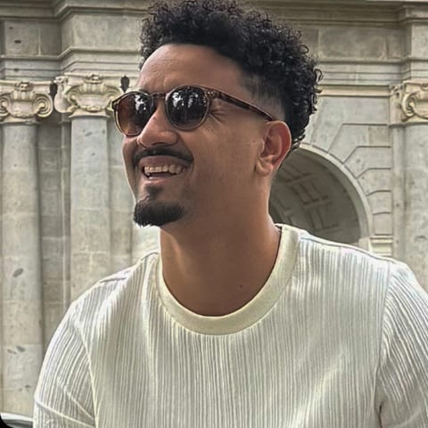

Product Designer Sênior
31 anos · Volta Redonda – RJ
Atuo como designer há 12 anos, sendo os últimos seis dedicados a produtos digitais. Sou apaixonado por pessoas, esportes, viagens, arte e tecnologia. Tenho um perfil end-to-end: gosto de transformar problemas complexos em soluções simples, estratégicas e centradas no usuário. Tenho me tornado cada dia mais AI-first, usando IA para acelerar pesquisas, explorar ideias e criar protótipos, sempre com o olhar humano como principal guia.
Design na UniFOA | 2015 – 2018
Estratégia de produtos transversais, Admin Global, Dashboards de Admissão e iniciativas de ecossistema.
Liderança de designers em Performance & Cross Products, evolução do módulo de Metas & OKRs e operação orientada por ciclos.
Redesign da plataforma de Performance, evolução das devolutivas e transformação da visão do produto para jornadas orientadas por ciclos.
Recrutamento & Seleção e Admissão, liderando discovery, novas funcionalidades, Banco de Talentos, Lista Segmentada e validação do eSocial.
Pesquisa, prototipação e evolução de produtos digitais para diferentes clientes e startups.
Projetos de branding, identidade visual, interfaces web e sites institucionais.
Construção da startup do MVP à validação de mercado, conduzindo discovery, UX, prototipação e evolução do produto.
Criação de identidades visuais, branding e materiais gráficos para diferentes clientes.